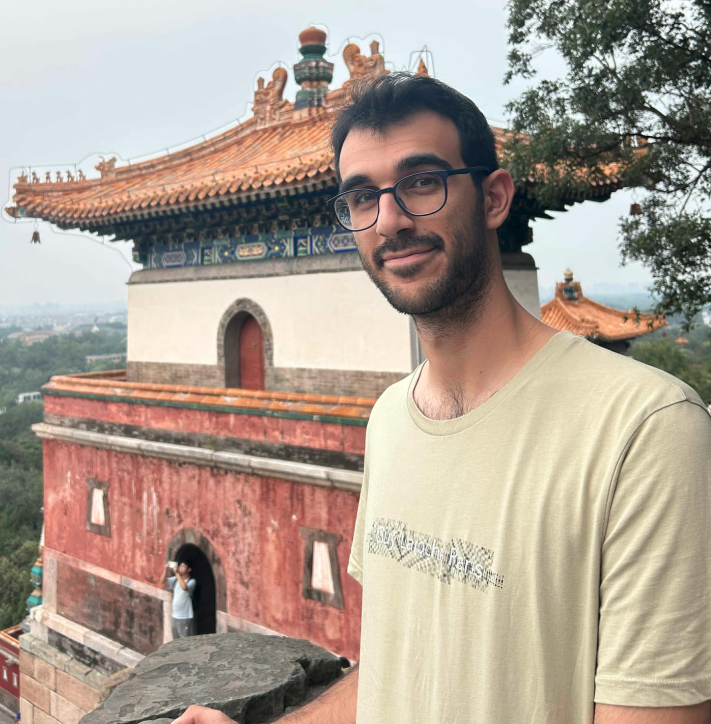

MSR Student @ CMU | Former Autopilot Software Engineer @ Tesla
CV | Google Scholar | GitHub
Hi! I am Ares Koumblis (Greek: Άρης Κουμπλής), an M.S. Robotics student at Carnegie Mellon University, where I research vision-language-action (VLA) models for general-purpose robotics. I hold a BE/ME in Electrical and Computer Engineering from the National Technical University of Athens, with a concentration in Computer Science. While at NTUA, I founded and led the Formula Student (FSAE) autonomous driving team within PROM Racing NTUA. My thesis focused on the autonomous driving pipeline deployed on the team's first driverless race car, advised by Prof. Constantinos Tzafestas.
Before CMU, I worked on Tesla Autopilot, where I focused on model evaluation, metric validation, software integration, and motion planning for autonomous driving systems. My experience spans the development of a camera-only autonomous stack for an FSAE race car to evaluating and deploying learning-based autonomy at production scale.
These experiences have shaped my interest in scalable robot learning and general-purpose robotic agents. My current research focuses on hierarchical vision-language-action models, with an emphasis on high-level policies with memory, grounding between high- and low-level policies, generalization across robot embodiments, and data generation for hierarchical learning. More broadly, I am interested in building learning-based systems that can combine perception, reasoning, memory, and action to generalize across tasks and operate reliably in the real world.
The full autonomous driving software of P23, PROM Racing NTUA's first driverless car: GitHub link
An additional detection head to the existing YOLOv8-based perception pipeline to enable distance (range) estimation for each detected Formula Student cone: GitHub link
A study on lightweight keypoint detection networks for Formula Student cones: GitHub link
Koumplis, Aris. "Contribution to the Design and Implementation of an Autonomous Driving System for a Formula Student Driverless Car." (2024).